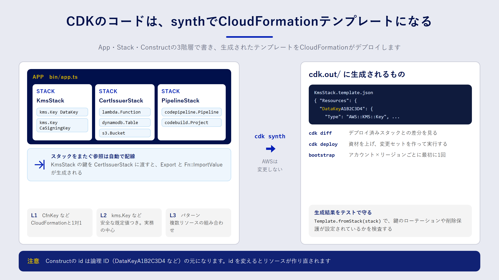

Chapter 05
AWS CDKでインフラをプログラミングする
この章で分かること
- CDK のアプリが App・Stack・Construct の3階層でできていること
- L1・L2・L3 という Construct の違いと、使い分けの目安
cdk synthからcdk deployまでに、裏で何が起きているのか- 初回に必要な「ブートストラップ」の意味
- CDK のコードをユニットテストで検査する方法
CDK は CloudFormation を書くためのプログラム
AWS CDK（Cloud Development Kit）は、TypeScript や Python などのプログラミング言語でインフラを定義するためのフレームワークです。3章で見たとおり、CDK は最終的に CloudFormation のテンプレートを生成します。実際にリソースを作るのは CloudFormation で、CDK はその設計図を書くための道具です。
YAML を直接書く場合と比べて、CDK には次のような利点があります。
- 関数やクラスで共通部分をまとめられる。
- エディターの補完や型チェックが効き、書き間違いにすぐ気づける。
bucket.grantRead(role)のように、意図を1行で表すと必要なポリシーが生成される。- 普段のテストフレームワークで、インフラの定義をテストできる。
一方で、「生成されたテンプレートで何が作られるのか」を意識しないと、思わぬリソースが作られることもあります。この章では、CDK のコードと生成されるテンプレートを行き来しながら理解していきます。
App・Stack・Construct の3階層
CDK のアプリは、次の3つの階層でできています。
| 階層 | 役割 | サンプルでの例 |
|---|---|---|
| App | アプリ全体。1つ以上の Stack を持つ | bin/app.ts の new cdk.App() |
| Stack | CloudFormation のスタック1つに対応する単位 | KmsStack、CertIssuerStack、PipelineStack |
| Construct | リソース、またはリソースの組み合わせ | new kms.Key(...)、new lambda.Function(...) |

サンプルのエントリーポイントを見てみましょう。
const app = new cdk.App();
// 環境は CLI の CDK_DEFAULT_ACCOUNT / CDK_DEFAULT_REGION から取る。
const env = {
account: process.env.CDK_DEFAULT_ACCOUNT,
region: process.env.CDK_DEFAULT_REGION,
};
const kms = new KmsStack(app, "KmsStack", { env });
const issuer = new CertIssuerStack(app, "CertIssuerStack", {
env,
caSigningKey: kms.caSigningKey,
dataKey: kms.dataKey,
});
issuer.addDependency(kms);
new PipelineStack(app, "PipelineStack", { env });
app.synth();
KmsStack が作った鍵を、CertIssuerStack にプロパティとして渡しています。CDK はスタックをまたぐ参照を見つけると、CloudFormation の Export と Fn::ImportValue を自動で生成します。4章で見た !ImportValue を、手で書かなくてよいわけです。
どの Construct も、new Xxx(scope, id, props) という同じ形で作ります。scope は親（どこに置くか）、id は親の中での名前、props は設定です。この id は、生成されるテンプレートの論理 ID の元になります。4章で見たとおり論理 ID が変わるとリソースは作り直しになるので、id は気軽に変えないようにしましょう。
L1・L2・L3 の Construct
Construct には、抽象度の違う3つのレベルがあります。
| レベル | 特徴 | 例 |
|---|---|---|
| L1 | CloudFormation のリソースと1対1。名前は Cfn で始まる |
kms.CfnKey |
| L2 | 安全な既定値と便利なメソッドを備えた、よく使う形 | kms.Key、s3.Bucket |
| L3（パターン） | 複数のリソースを組み合わせた構成 | ecs_patterns.ApplicationLoadBalancedFargateService |
実務で中心になるのは L2 です。たとえば s3.Bucket は、何も指定しなくてもパブリックアクセスをブロックし、暗号化を有効にします。L2 がまだ対応していない新しいプロパティを使いたいときは、L1 を使うか、L2 から L1 を取り出して設定を上書きします。
const bucket = new s3.Bucket(this, 'LogsBucket');
const cfnBucket = bucket.node.defaultChild as s3.CfnBucket;
cfnBucket.addPropertyOverride('ObjectLockEnabled', true);
L3 は手早く構成を作れますが、中で何が作られるかが見えにくくなります。セキュリティ要件が厳しい場面では、L2 を組み合わせて自分で構成するほうが、レビューしやすくなります。
synth と deploy で起きていること
CDK の中心になるコマンドは次の3つです。
| コマンド | 何をするか |
|---|---|
cdk synth |
コードを実行して CloudFormation テンプレートを cdk.out/ に書き出す |
cdk diff |
生成したテンプレートと、デプロイ済みのスタックの差分を表示する |
cdk deploy |
テンプレートと資材（Lambda のコードなど）をアップロードし、CloudFormation でデプロイする |
cdk synth は AWS に何も変更を加えません。手元でテンプレートを確認したいとき、テストの前に生成結果を見たいときに使います。この本のサンプルも、AWS アカウントなしで synth まで確かめられるようにしてあります。
cd samples/cdk
npm ci
CDK_DEFAULT_ACCOUNT=111122223333 CDK_DEFAULT_REGION=ap-northeast-1 npx cdk synth KmsStack
cdk deploy は、既定では変更セットを作ってから実行します。つまり、4章の「作る → 確認する → 実行する」を自動でまとめて行っています。--method=prepare-change-set を付けると、変更セットを作ったところで止められます。9章のパイプラインでは、この「作る」と「実行する」を別の段階に分けます。
ブートストラップ：最初に1回だけ必要な準備
CDK でデプロイする前に、アカウントとリージョンの組ごとに1回、ブートストラップが必要です。
npx cdk bootstrap aws://111122223333/ap-northeast-1
これを実行すると、CDKToolkit という名前のスタックが作られます。中身は、CDK がデプロイに使う作業場所と権限のセットです。
- 資材の置き場：Lambda のコードやテンプレートを置く S3 バケットと、コンテナイメージを置く ECR リポジトリ
- 役割ごとの IAM ロール：資材をアップロードするロール、デプロイを指示するロール、CloudFormation が実際にリソースを作るときに使うロールなど
最後の「CloudFormation が使うロール」には、既定では強い権限（AdministratorAccess）が付きます。本番のアカウントでは、--cloudformation-execution-policies で付けるポリシーを絞ることを検討してください。9章のパイプラインは、このブートストラップで作られたロールを引き受けてデプロイします。
CDK のコードをテストする
CDK はプログラムなので、ユニットテストが書けます。aws-cdk-lib/assertions の Template を使うと、生成されるテンプレートの中身を検査できます。
import { App } from 'aws-cdk-lib';
import { Template } from 'aws-cdk-lib/assertions';
import { KmsStack } from '../lib/kms-stack';
test('データ用の鍵はローテーションが有効', () => {
const app = new App();
const stack = new KmsStack(app, 'TestKmsStack');
const template = Template.fromStack(stack);
template.hasResourceProperties('AWS::KMS::Key', {
EnableKeyRotation: true,
});
});
test('鍵は削除されずに残る', () => {
const app = new App();
const template = Template.fromStack(new KmsStack(app, 'TestKmsStack'));
template.allResources('AWS::KMS::Key', {
DeletionPolicy: 'Retain',
UpdateReplacePolicy: 'Retain',
});
});
hasResourceProperties は「指定したプロパティを持つリソースが1つ以上あるか」、allResources は「その種類のリソースがすべて条件を満たすか」を検査します。ほかに、リソースの数を確かめる resourceCountIs もよく使います。
どんなテストを書くべきか迷ったら、レビューで毎回確認していることをテストにするのがおすすめです。「鍵が削除されない」「Lambda に kms:* が付いていない」「バケットが公開されていない」といった、壊れると困る性質をテストで守ります。
まとめ
- CDK はプログラミング言語で CloudFormation テンプレートを生成する道具で、実際のデプロイは CloudFormation が行います。
- アプリは App・Stack・Construct の3階層です。Construct の
idは論理 ID の元になるので、安易に変えないようにします。 - 実務の中心は L2 Construct です。足りないところは L1 やプロパティの上書きで補います。
cdk synthは AWS を変更しません。cdk deployは既定で変更セットを作ってから実行します。- ブートストラップは、アカウントとリージョンの組ごとに1回必要です。
- レビューで確認している性質は、
Templateを使ったユニットテストで守れます。
確認問題
問1. cdk synth を実行すると、AWS アカウントには何が起きますか。
解答
何も起きません。cdk synth はコードを実行してテンプレートを cdk.out/ に書き出すだけです。ただし、コードの中で VPC の検索などの「lookup」を使っている場合は、値を取得するために AWS の API を読み取りで呼び出すことがあります。
問2. L2 Construct が対応していない CloudFormation のプロパティを設定したいとき、どうしますか。
解答例
L2 の node.defaultChild から L1（Cfn で始まるクラス）を取り出し、addPropertyOverride でプロパティを追加します。または、最初から L1 Construct を使って定義します。
問3. ブートストラップで作られる CDKToolkit スタックには、主に何が含まれますか。
解答
デプロイの資材を置く S3 バケットと ECR リポジトリ、そして資材のアップロード、デプロイの指示、CloudFormation によるリソース作成などに使う IAM ロールです。